本机只读研究。600 个真实 block ID 与 600 个全局像素哈希；不同版本、蜡封变体、同一个方块的不同面不计入补数。每页 50 个，1× 原图 + 7× 最近邻。参考图不是 Dynasty 候选素材。
| 来源 | 数量 |
|---|---|
| 原版 Minecraft 1.20.1 | 80 |
| 愚者 | 198 |
| 乌托邦探险之旅3.5.2 | 170 |
| 登神者：天阶咏叹v1.5 | 31 |
| 锻造之旅 | 91 |
| 涟漪之篇·如涟漪之所见 | 30 |
完整来源与模型引用审计 · 600 项索引 · 设计观察和边界 · 独立复核
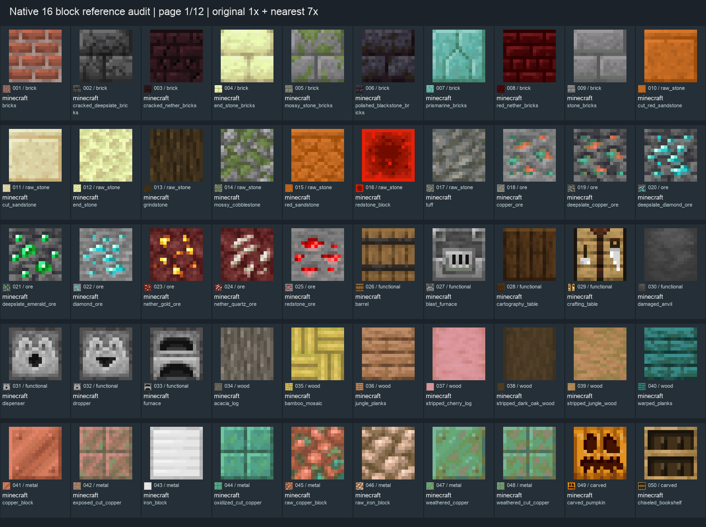
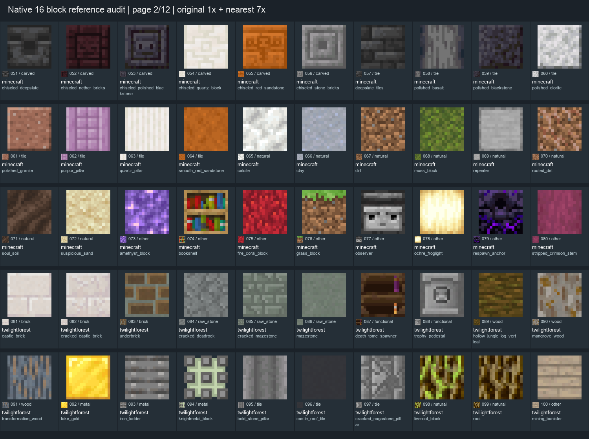
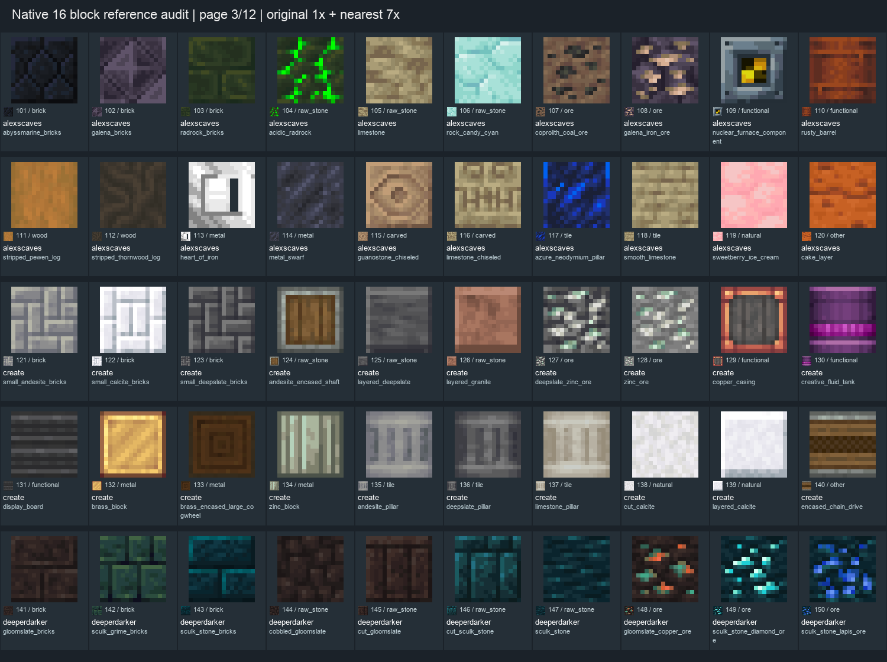
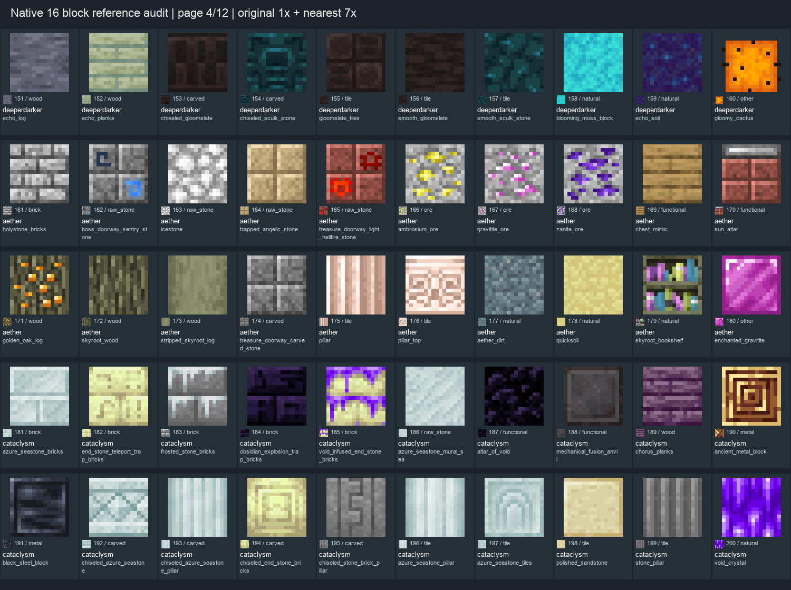
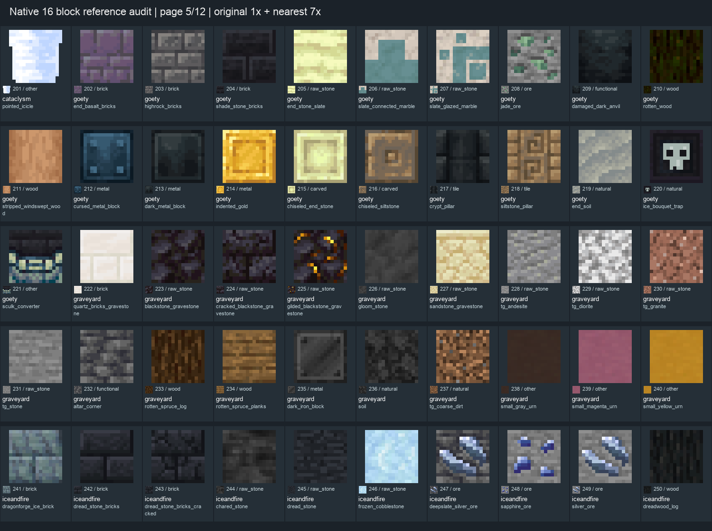
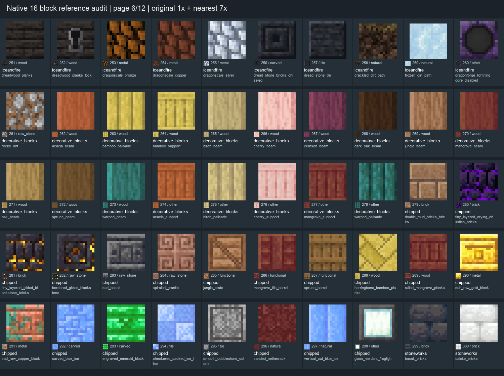
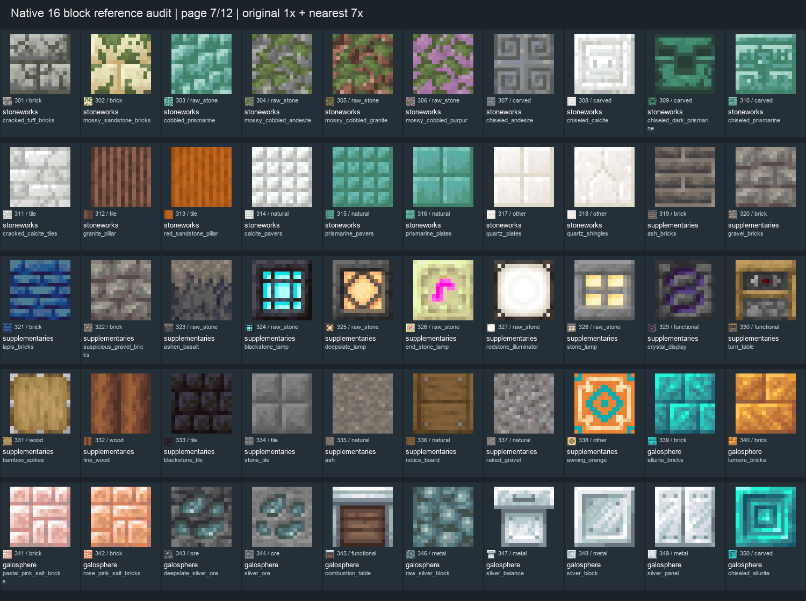
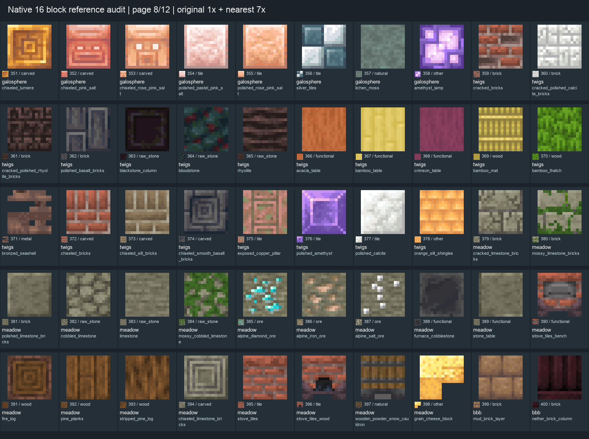
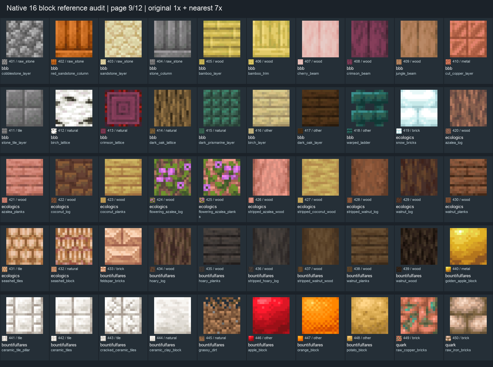
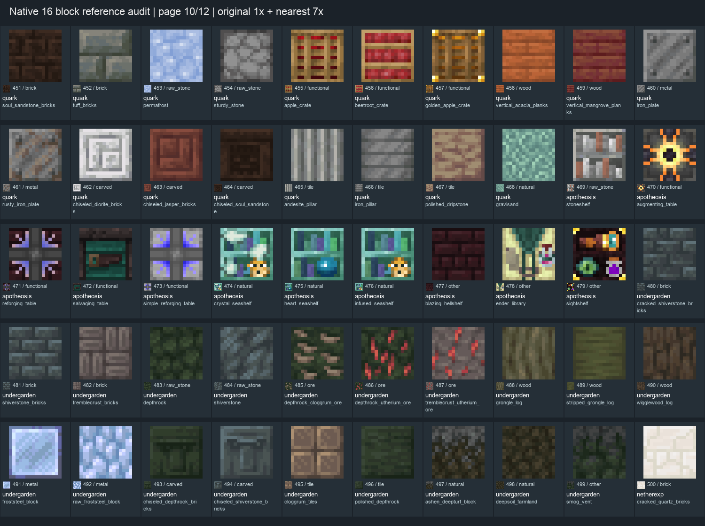
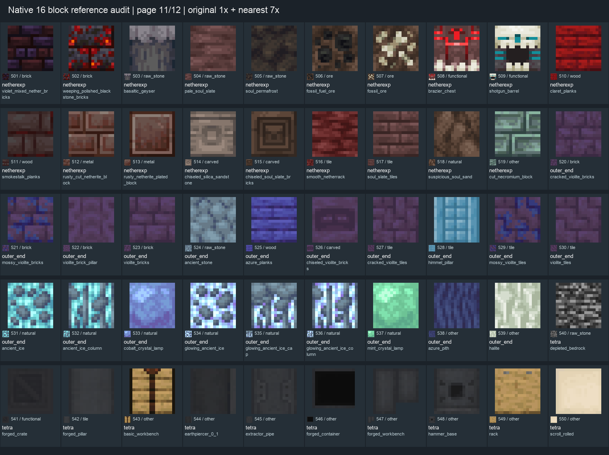
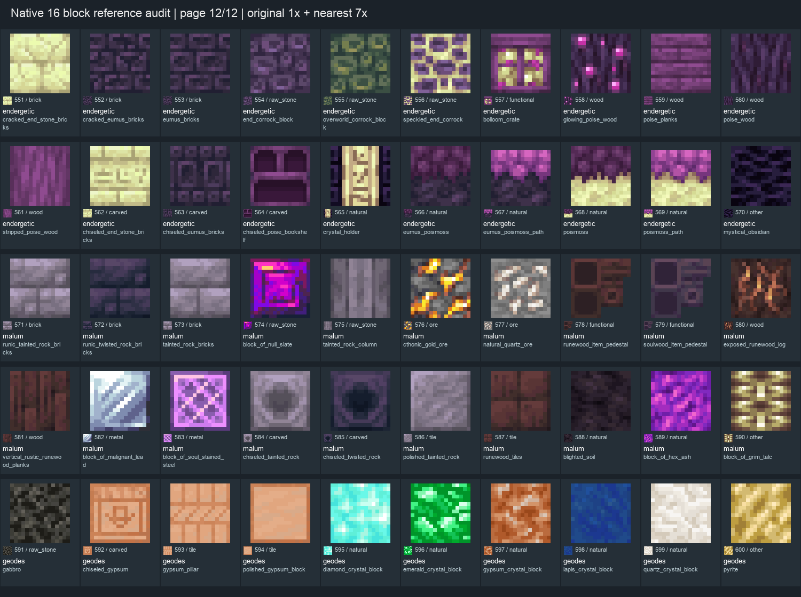